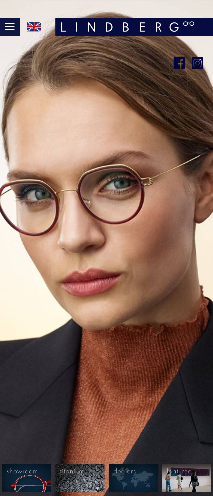

Proximity
LINDBERG Eyewear
The design element of proximity was applied by grouping all the connected elements to each other. The logo, together with the menu are grouped, the business and product information are all in the bottom of the page, and the image showcasing one of the products is in the middle.
Contrast
Razer
The color scheme for the company, Razer, is simple and dark. Important elements are highlighted by using brighter colors. The logo has a bright green color and the product has a hint of bright colors that are really eye-catching.
White Space
Architectural Digest
The Architectural digest website was designed simply to highlight the images that display their different designs. The website only used a simple black font and applied a lot of white space to draw attention to the pictures in the website.